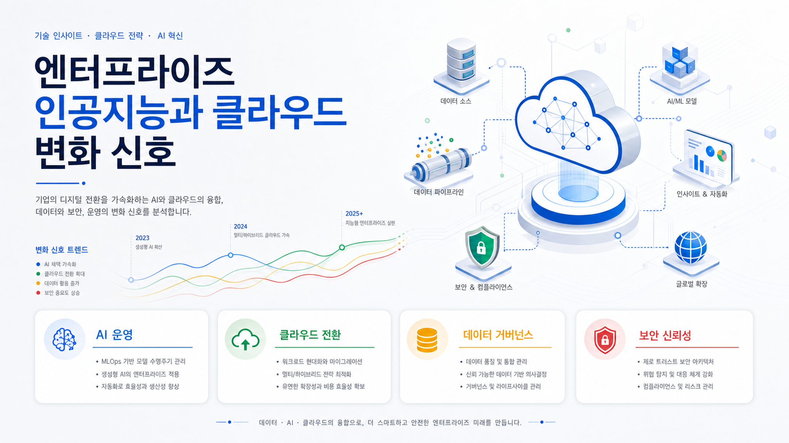
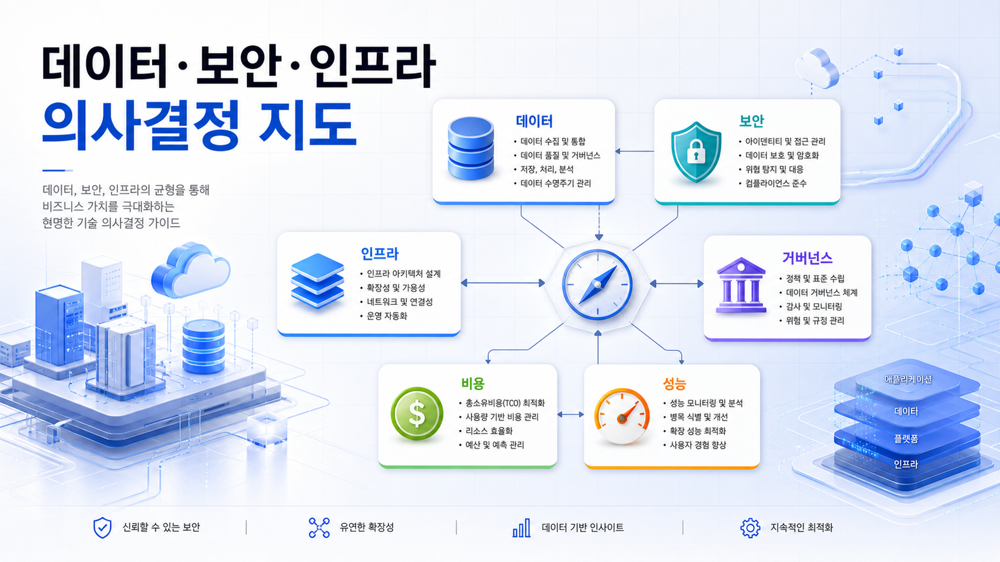
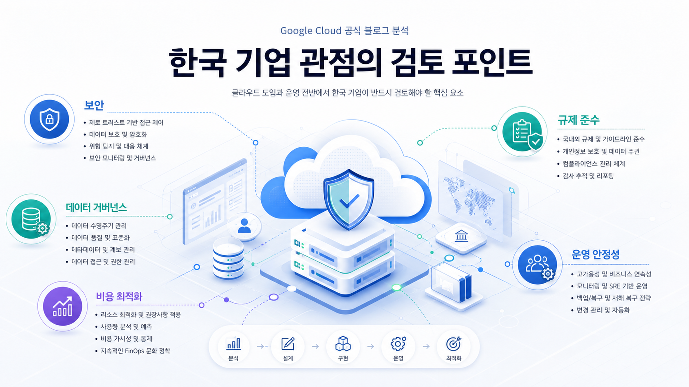

2026-06-29 · 구글 클라우드 블로그 - 데이터 분석
Fraud Prevention with BigQuery Graph
대규모 데이터 분석으로 숨겨진 사기 패턴을 식별하고 거래 손실을 줄이는 접근을 설명합니다.
원문 확인구글 클라우드 공식 블로그 모니터링
이번 실행 신규 저장 3건. 신규 수집 문서 3건을 기반으로 작성했습니다. 본 문서는 실제 수집·검증된 원문 URL과 로컬 지식 저장 처리 결과를 근거로 작성했습니다.

2026-06-29 · 구글 클라우드 블로그 - 데이터 분석
대규모 데이터 분석으로 숨겨진 사기 패턴을 식별하고 거래 손실을 줄이는 접근을 설명합니다.
원문 확인2026-06-29 · 구글 클라우드 블로그 - 데이터 분석
BigQuery의 새로운 AI.AGG function을 사용해 로그와 문서 같은 비정형 데이터를 대규모로 분석하는 방법을 설명합니다.
원문 확인2026-06-29 · 구글 클라우드 블로그 - ID 및 보안
AI Threat Defense 발표 이후, Google Cloud Security가 자율적인 소프트웨어 개발 수명주기 보안을 위해 인공지능을 내부적으로 활용하는 방식을 설명합니다.
원문 확인
수집 문서에서 반복 확인되는 키워드는 BigQuery, Confidential Computing, Gemini, Gemini Enterprise, Google Cloud Security, IAM, Mandiant, Python UDF, VPC, VPC Service Controls입니다. 이는 제품 발표 단위보다 기능 적용 조건, 보안 경계, 데이터 처리 방식의 세부 검토가 중요하다는 신호입니다.
공식 블로그만으로 조직별 적합성을 단정할 수 없습니다. 의사결정자는 원문 URL에서 제공 상태, 리전, 가격, 권한, 데이터 거버넌스 조건을 확인해야 합니다.
| 발행일 | 출처 블로그 | 원문 제목 | 관찰 기술 |
|---|---|---|---|
| 2026-06-29 | 구글 클라우드 블로그 - 데이터 분석 | Fraud Prevention with BigQuery Graph | Gemini, Gemini Enterprise, BigQuery, Python UDF |
| 2026-06-29 | 구글 클라우드 블로그 - 데이터 분석 | Deep dive into BigQuery AI.AGG function | Gemini, Gemini Enterprise, BigQuery, IAM, Python UDF |
| 2026-06-29 | 구글 클라우드 블로그 - ID 및 보안 | Cloud CISO Perspectives: How Google Cloud Security uses AI internally | Gemini, VPC Service Controls, VPC, Mandiant, Google Cloud Security, Confidential Computing |

공식 발표에서 확인되는 기능은 기존 클라우드 아키텍처의 자동화, 데이터 분석, 보안 통제 범위를 넓힐 수 있습니다. 다만 실제 효과는 사용량·리전·조직 데이터 정책에 따라 달라집니다.
새 기능이 권한 모델, 데이터 위치, 감사 로그, 네트워크 경계와 맞지 않으면 도입 리스크가 커질 수 있습니다. 원문 기반 조건 외 세부 통제 항목은 확인 필요입니다.
단계별 로드맵 대신, 이번 수집 문서별로 즉시 확인 가능한 적용 조건 목록을 만들고 기존 표준 아키텍처와 충돌 여부를 검토하는 방식이 적절합니다.
Fraud Prevention with BigQuery Graph 게시물에서 Gemini, Gemini Enterprise, BigQuery, Python UDF 관련 변화가 확인되었습니다.
https://cloud.google.com/blog/products/data-analytics/fraud-prevention-with-bigquery-graph
기업 의사결정자는 해당 기능이 기존 데이터·보안·인프라 정책과 충돌하지 않는지, 리전·가격·권한 모델이 실제 적용 조건을 충족하는지 검토해야 합니다. 수집 문서만으로 정량 효과는 확인 필요입니다.
Deep dive into BigQuery AI.AGG function 게시물에서 Gemini, Gemini Enterprise, BigQuery, IAM, Python UDF 관련 변화가 확인되었습니다.
https://cloud.google.com/blog/products/data-analytics/deep-dive-into-bigquery-ai-agg-function
기업 의사결정자는 해당 기능이 기존 데이터·보안·인프라 정책과 충돌하지 않는지, 리전·가격·권한 모델이 실제 적용 조건을 충족하는지 검토해야 합니다. 수집 문서만으로 정량 효과는 확인 필요입니다.
Cloud CISO Perspectives: How Google Cloud Security uses AI internally 게시물에서 Gemini, VPC Service Controls, VPC, Mandiant, Google Cloud Security, Confidential Computing 관련 변화가 확인되었습니다.
기업 의사결정자는 해당 기능이 기존 데이터·보안·인프라 정책과 충돌하지 않는지, 리전·가격·권한 모델이 실제 적용 조건을 충족하는지 검토해야 합니다. 수집 문서만으로 정량 효과는 확인 필요입니다.
목적: 엔터프라이즈 인공지능과 클라우드 변화 신호
삽입 위치: 본문 이미지 1
이미지 생성 프롬프트: 한국어 기업 기술 블로그용 고급 인포그래픽 이미지. 주제: 엔터프라이즈 인공지능과 클라우드 변화 신호. 구글 클라우드 공식 블로그 분석 분위기, 추상 클라우드/데이터/보안 시각화, 전문적이고 깨끗한 편집 디자인, 과도한 로고 없음, 큰 한국어 제목 '엔터프라이즈 인공지능과 클라우드 변화 신호'가 이미지 안에 자연스럽게 포함됨.
권장 비율: 16:9
대체 텍스트: 엔터프라이즈 인공지능과 클라우드 변화 신호
목적: 데이터·보안·인프라 의사결정 지도
삽입 위치: 본문 이미지 2
이미지 생성 프롬프트: 한국어 기업 기술 블로그용 고급 인포그래픽 이미지. 주제: 데이터·보안·인프라 의사결정 지도. 구글 클라우드 공식 블로그 분석 분위기, 추상 클라우드/데이터/보안 시각화, 전문적이고 깨끗한 편집 디자인, 과도한 로고 없음, 큰 한국어 제목 '데이터·보안·인프라 의사결정 지도'가 이미지 안에 자연스럽게 포함됨.
권장 비율: 16:9
대체 텍스트: 데이터·보안·인프라 의사결정 지도
목적: 한국 기업 관점의 검토 포인트
삽입 위치: 본문 이미지 3
이미지 생성 프롬프트: 한국어 기업 기술 블로그용 고급 인포그래픽 이미지. 주제: 한국 기업 관점의 검토 포인트. 구글 클라우드 공식 블로그 분석 분위기, 추상 클라우드/데이터/보안 시각화, 전문적이고 깨끗한 편집 디자인, 과도한 로고 없음, 큰 한국어 제목 '한국 기업 관점의 검토 포인트'가 이미지 안에 자연스럽게 포함됨.
권장 비율: 16:9
대체 텍스트: 한국 기업 관점의 검토 포인트